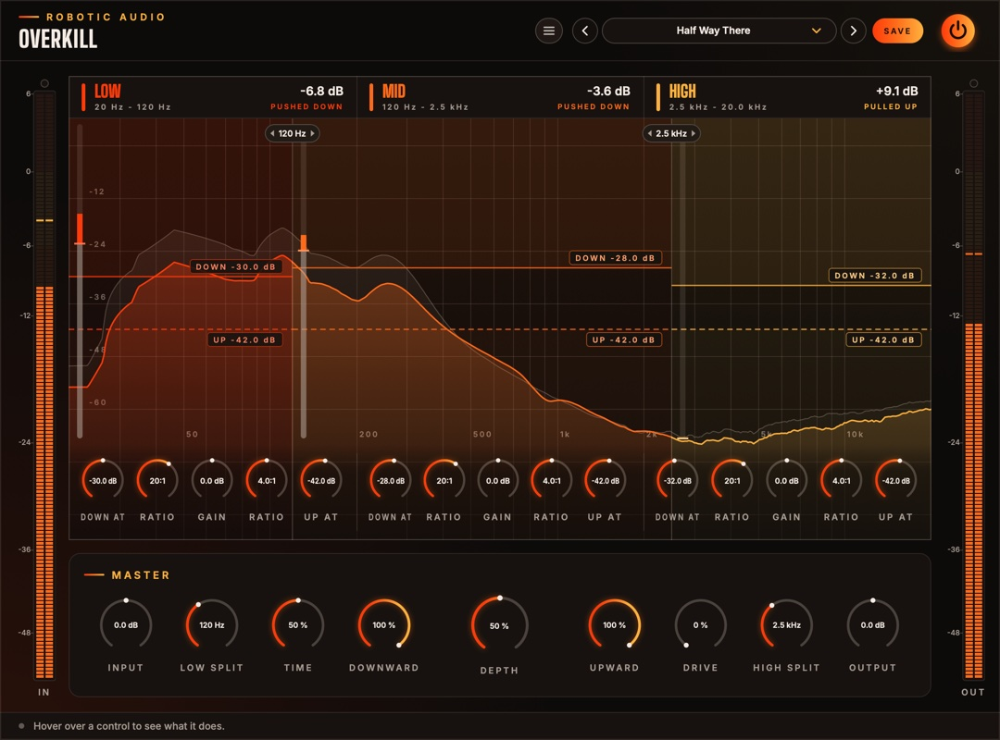

Overkill
Multiband compression taken over the top. Three bands, each pushed down when it's loud and pulled up when it's quiet, so everything comes forward at once: thick, bright, loud and in your face. The spectrum runs right under the controls, so you can see what every move does.
- 3 bands
- Upward + downward
- Live spectrum, in and out
- Drag thresholds and splits
- 4× oversampled drive
- 11 factory presets
- AU · VST3 · Standalone

Quick start
From a polite lift to full overkill.
Start at Default
The classic sound: every band squashed from above and lifted from below, at full DEPTH. Expect it to be loud.
Set the depth
Turn the big DEPTH knob down until it sits in the mix. 20–40 % is often plenty on a whole mix; drums and synths take more.
Watch the bands
Each band's lit spectrum shows what comes out, the faint one what went in. The readout at the top of each band says how far it's being pushed down or pulled up right now.
Move the lines
Drag a band's solid line (DOWN) or dashed line (UP) up or down. Between the two lines nothing happens to the band.
Move the splits
Drag a split line (or its tag) along the spectrum to choose where one band ends and the next begins.
Match the level
Bring OUTPUT down until the OUT meter reads about what IN does, then compare with the power button.
The window
The bands on top, the controls for all of them below.
- Header
- The preset bar (previous, next, the list, SAVE), the power button (bypass) and the menu (three lines) with this manual. Click the logo for the version and credits. With an AI key, a >_ beside the preset bar opens the designer.
- IN and OUT meters
- The level going in (after Input) and coming out (after everything), with clip lamps on top.
- Low, Mid, High
- Each band over its own part of the spectrum, with its two lines, its meter and its five knobs. See The band display.
- Master
- Input, the two splits, Time, Downward, the big Depth knob, Upward, Drive and Output.
- Tooltip strip
- Along the bottom: what the control under the mouse does.
Signal flow
Split, squeeze and lift each band, add them up, then drive.
Input → split into Low, Mid and High → each band pushed down above its DOWN line and pulled up below its UP line, then its Gain → the bands added back together → Drive → Output.
The splits are steep (24 dB per octave, Linkwitz-Riley) and phase-matched, so with Depth at 0 the three bands add back up to the sound that went in. Each band follows its own level, stereo-linked, so the stereo image stays put. The low band reacts more slowly than the middle and the high band more quickly: the bass stays smooth and the top stays snappy.
Drive bends the waveform, which makes new, higher frequencies; it runs at four times the sample rate so those don't fold back as aliasing. At 0 it's skipped.
The band display
The spectrum under the controls.
The spectrum runs from 20 Hz to 20 kHz across the whole width, on a logarithmic scale, and the three bands are coloured regions of it, divided where the splits really are. Drag a split and the band grows or shrinks over the spectrum: you see exactly which notes, kicks or cymbals land in which band. Each band's name, readout and knobs keep a steady third of the width, in the band's colour, wherever the splits are.
- Faint spectrum
- What goes in (after Input).
- Lit spectrum
- What comes out, in the band's colour. Lower than the faint one: the band is being pushed down. Higher: it's being pulled up.
- DOWN line (solid)
- Above it the band is pushed down; the shaded zone above it is where that happens. Drag it up or down.
- UP line (dashed)
- Below it the band is pulled up, bringing quiet detail, tails and room sound forward. Drag it up or down.
- Band meter
- The bar at the left edge of the band's region, on the same dB scale as the lines. Grey is the band's level going in; the lit bar runs from there to where the band has been moved, with a tick at its new level.
- Readout
- At the top of the band: how far it's moved right now, and whether it's PUSHED DOWN or PULLED UP.
- Splits
- The lines between the band regions, with the frequency in a tag on top. Drag one sideways: it follows the mouse along the frequency scale.
The spectrum shows the energy within a third of an octave round each point, so it reads on the same scale as the lines: a band whose spectrum peaks above its DOWN line is being squeezed. Pink noise, and most music, looks roughly level across the range.
Band controls
Five knobs per band, under its spectrum: the down pair on the left, the up pair on the right.
- Down At
- The DOWN line: above this level the band is pushed down. −60 … 0 dB
- Ratio (left)
- How hard it's pushed down above the line: 2:1 is gentle, 20:1 firm, 100:1 a wall. 1:1 … 100:1
- Gain
- The band's level afterwards: tilt the sound by turning a band up or down. −24 … +24 dB
- Ratio (right)
- How hard it's pulled up below the UP line: at 4:1 a sound 10 dB under the line comes up 7.5 dB. 1:1 … 20:1
- Up At
- The UP line: below this level the band is pulled up. −84 … −6 dB
A band is pulled up by at most 30 dB, and nothing below −90 dB is lifted, so silence and hiss stay down. Both lines bend in gently over 6 dB (a soft knee).
Master controls
For all three bands at once.
- Input
- The level going in. The lines stay where they are, so more input means more pushing down and less pulling up. −24 … +24 dB
- Low Split
- Where the low band ends and the middle begins. 40 Hz … 1 kHz
- Time
- How fast every band reacts and lets go, from 1/8 to 8 times the middle setting. Short is grabby and crunchy and can distort low notes; long is smooth and breathing. 0 … 100 %
- Downward
- How much of the pushing down happens. 0 … 100 %
- Depth
- How far over the top: scales all of it, down and up. At 0 the sound is untouched. 0 … 100 %
- Upward
- How much of the pulling up happens. 0 … 100 %
- Drive
- Saturation after the bands are added up, to round off and thicken what they push out. 0 … 100 %
- High Split
- Where the middle band ends and the high band begins (kept at least half an octave above Low Split). 1 … 16 kHz
- Output
- The level after everything. −24 … +24 dB
Presets
Eleven starting points, and room for your own.
| Preset | What it does |
|---|---|
| Default | The classic: everything down and up, at full depth. |
| Half Way There | The same at half depth. |
| Gentle Lift | A light, slow lift for a whole mix. |
| Drum Bus Smash | Quick and grabby, with drive and a little more low end and top. |
| Vocal Presence | Lifts breaths and detail, with less low end. |
| Bass Glue | A steadier low band and a softer top. |
| Upward Only | Only pulls quiet things up; peaks untouched. |
| Downward Only | A plain three-band compressor. |
| Fairy Dust | Sparkle: the top pulled up hard, less low end. |
| Pad Breath | Slow and deep: pads and ambiences swell and breathe. |
| Total Overkill | Everything at the extreme, with drive. |
Press SAVE in the header to keep your own. The preset menu has Save As, Delete and Open Folder. An asterisk after the preset's name means you've changed something since loading it. Every knob is a host parameter and can be automated.
Designing with Claude
Describe a sound; Claude sets Overkill to make it.
With your own Anthropic key, the >_ beside the presets opens a designer: describe what you want in your own words, such as "tighter lows, a gentler top, more glue", and Claude sets every control you could automate: the bands, their splits and the master. It is told what every part does and how it is set now, so it can design from scratch or change only what you ask for.
- Keys
- Menu (three lines) > AI...: an Anthropic key for Claude. They are your own, shared by every Robotic Audio plugin and kept on this computer, never in sessions or presets; each design uses your credits with the service. Without a key nothing of this shows.
- >_
- Left of the preset bar, while a key works: opens the designer over the window. Type a description and press Return (or EXECUTE); ESC closes it, and what is running carries on.
- NEW SOUND / EDIT THIS
- NEW SOUND designs a new patch from your words; EDIT THIS changes the patch as it is, as you ask ("brighter", "less", "more subtle"), keeping the rest.
- REVERT
- Puts the patch back as it was before Claude's last design.
- SAVE AS PRESET
- Keeps the design as one of your presets, named after your words.
- The log
- What Claude made, and what it changed, part by part.
- >_ and AI...
- The designer and its keys: see Designing with Claude.
Recipes
Settings to start from; then use your ears.
Default, Depth 15–25 %, Time 60 %. Just enough to bring detail forward without hearing it work.
Default at full Depth, Time 30 %, Drive 20 %, Output −6 dB. Lower the high band's Gain if it fizzes.
Drum Bus Smash, then raise the mid band's UP line until the room and the snare's tail come up as far as you like.
Downward Only; lower the high band's DOWN line until it sits just under the cymbals' peaks in the display.
Turn two bands' Gain right down to hear the third alone, then drag the splits until only what you want is left.
Depth already works like a blend, without the phase trouble of a parallel send. Keep it at 30–50 % instead.
Specifications
The numbers.
| Property | Value |
|---|---|
| Bands | 3, split by 4th-order Linkwitz-Riley crossovers, phase-matched (they add up flat) |
| Detection | Peak, stereo-linked, per band; 6 dB soft knee |
| Times (middle setting) | Attack 12 / 6 / 3 ms, release 220 / 120 / 70 ms (low / mid / high); Time scales them 1/8 … 8× |
| Upward limit | 30 dB; nothing below −90 dB is lifted |
| Drive | Saturation at 4× oversampling |
| Spectrum | 4096-point FFT, third-octave levels, before and after |
| Latency | A few samples (the oversampling), reported to the host |
| Channels | Stereo (mono tracks work too) |
| Formats | AU, VST3, Standalone |